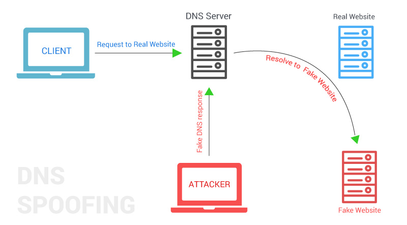

O ataque de DNS spoofing faz a modificação do endereço fonte
ou destino nas mensagens DNS com diversas finalidades.
Se uma botnet modifica seu endereço IP de origem trata-se de
um Flood Attack de amplificação,
através do qual os servidores DNS enviarão respostas para o
endereço que supostamente fez as requisições, exaurindo,
assim, os recursos do alvo.
Por outro lado, quando a resposta tem seu campo Value
alterado pode se tratar de um ataque de
Cache Poisoning, que,
por sua vez, pode ter como objetivo o sequestro de um
domínio ou redirecionar vítimas para endereços Web maliciosos,
como ilustra a figura abaixo:

O ataque é bem sucedido caso o servidor aceite a resposta falsa.
Softwares como o DNS Server da Microsoft verifica o único
campo exigido pela RFC 1035 para validar uma resposta, o
campo ID. Como este campo possui 16 bits, é possível,
teoricamente, realizar um ataque de força bruta enviando
respostas com diferentes IDs. O BIND
(Berkley Internet Name Domain), no intuito de aumentar a
segurança, verifica campos como IP e porta UDP, entre outros.
Formas de mitigar o ataque
Um método de defesa é guardar uma lista de respostas para uma
determinada requisição por um intervalo de tempo.
Enquanto outra resposta não for recebida o servidor pode
armazenar a primeira resposta em seu cache ou não. Assim que
outra resposta chega com o mesmo ID, são verificados os outros
campos. Se o Value de alguma das respostas subsequentes for
diferente, é identificado o ataque e as devidas medidas são
tomadas, como remover a resposta do cache e relatar o ocorrido
à administração da rede. As respostas que tiverem o mesmo
Value são consideradas como uma única resposta.
O tempo estimado para análise das respostas DNS é baseado
nas estatísticas de performance do DNS mostradas pelo
MIT Laboratory for Computer Science e pelo
Korea Advance Institute of Science and
Technology (KAIST). Essas estatísticas mostraram que o
tempo médio para resolução de um nome é de 97 ms,
sendo assim, um tempo entre 500 e 900 ms estipulado para
análise de detecção de um ataque é suficiente.
Outro método de defesa é utilizar o DNSSEC,
nome dado às extensões de segurança que estão sendo propostas
para o protocolo DNS, definido pela RFC 2035.
A principal característica desse modelo é prover autenticação
da origem dos dados e verificar sua integridade utilizando
criptografia de chave pública.
No entanto o custo de processamento para validação de
assinaturas digitais é demasiadamente elevado.
Esse custo depende do algoritmo utilizado:
Com DSA-512 é possível assinar aproximadamente
135 domínios/segundo em um PC de 500 Mhz utilizando FreeBSD
e com RSA-1024 a taxa cai para 17 domínios/segundo.
Para efeito de comparação um Root Server recebe em torno
de 1.8 milhão de requisições por minuto.